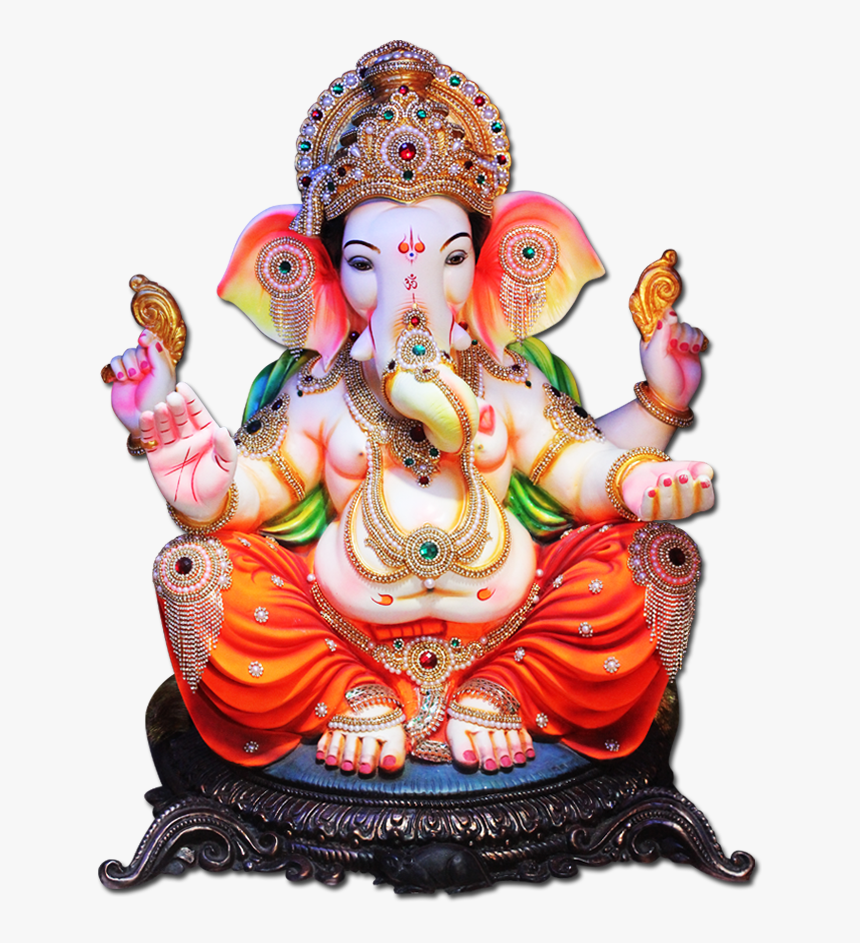
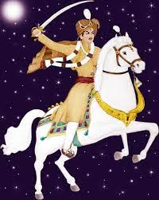

|  | |
 |
|---|---|---|
| ||ॐ શ્રી ગણેશાય નમ:|| | જય હરસિધ્ધિ માં | જય સુરાપુરા દાદા |
'પાણખાણીયા' અટકની ઉત્પત્તિ.હું અર્જુન હરજીભાઈ પાણખાણીયા છું હું આ વાર્તાનો સર્જક કે લેખક નથી, મેં આ ક્યાંક વાંચ્યું છે અને કેટલીક ભૂલો શોધી અને સંપાદિત કરી છે જેમાં જોડણીની ભૂલ અને સરનેમ સુધારવાનો સમાવેશ થાય છે, અહીં આ લેખ છે: Refrence Link:- https://www.sspgm.net/surnames/pankhania "રવજીભાઈ પરબતભાઈ પાણખાણીયા દ્વારા રજુઆત કરેલ સંક્ષિપ્ત ઇતિહાસ લખવામાં મને ખૂબ આનંદ થાય છે હું મારી ઉત્તેજના વ્યક્ત કરી શકતો નથી મને આ તક આપવામાં આવી છે અને હું આને મહાન માનું છું પાણખાણીયા પરિવાર વિશે થોડાક શબ્દો લખવાનો લહાવો. ઘણો તમે નીચે વાંચશો તે માહિતી ખૂબ જ મહેનતથી એકત્રિત કરવામાં આવી હતી અને કવિરાજ મનહરભાઈ બુદ્ધિસાગરભાઈ બારોટ, રાણાવાવ દ્વારા સંકલિત અને પાણખાણીયા સંમેલનની કારોબારી સમિતિના સભ્યો દ્વારા પ્રકાશિત (યુકે 2000) આજે પાણખાણીયા પરિવાર શ્રીસોરઠિયા પ્રજાપતિ જ્ઞાતિની અંદર સૌથી મોટો છે. પાણખાણીયા પરિવારનો મૂળ ચુડાસમા (રાજપૂત ક્ષત્રિય) પરિવારમાથી થયો હતો. ઇતિહાસ જણાવે છે કે કૃષ્ણ ભગવાનની 79મી ચંદ્રવંશી ચુડાસમા રાજપૂત ક્ષત્રિયોની પેઢીએ જન્મ આપ્યો. રાજા દેનેન્દ્ર તેને ગજપત નામનો પુત્ર હતો, જેણે તેના રાજ્ય જુનાગઢ પર શાસન કર્યું સવજી દાદાના નેતૃત્વમાં ચુડાસમા રાજપૂત પરિવાર એક કેશોદ નજીકના સ્થળ 'પાણખાણ'માં સ્થાયી થયા હતા, તેથી અમે પાણખાણીયા તરીકે ઓળખાય છીએ. તેમણે પ્રજાપતિ કુંભાર પરિવારની યુવતી સાથે લગ્ન પણ કર્યા હતા.પાણખાણમા પાણખાણીયા પરિવાર સાથે, એક વાઢેર પરિવાર રહેતો હતો પાણખાણીયા અને વાઢેર પરિવારો ખુશીથી સાથે રહેતા હતા, અને એકબીજાને ભાઈ તરીકે સ્વીકાર્યા. બંને પરિવારોએ એકબીજાની સહમતીથી રક્ત રેખાઓને સ્વચ્છ રાખીને એકબીજા સાથે લગ્ન કર્યા ન હતા. આથી તેઓ પોતાને "સખ ભાઈ" કહે છે અને આજ દિન પાલન સુધી કરે છે. પાણખાણીયાએ તેમના કુટુંબના દેવતા આધ્ય શક્તિ હરસિદ્ધિ માતાજીની પૂજા કરે છે. અમે બ્રાહ્માણી, નાગ બાપા અને વાછરા દાદાને પણ માનીએ છીએ. અમારા પૂર્વજ સવજી દાદાથી પેઢીઓ ચાલતી રહી કાલક્રમ પ્રમાણે વીરજી, વિક્રમજી, ખાસિયા, સરિયા, દેવા, હીરા, માલા, માંડણ, મુંજા, સામત, સરમણ. માંડણ પરિવાર પછી અમે અલગ થયા અને અલગ અલગ જગ્યાએ સ્થાયી થયા. માંડણ બાપા પાણખાણમાં એક શૂરવીર યોદ્ધા તરીકે મૃત્યુ પામ્યા હતા.જેમનુ પાણખાણમાં 'સુરાપુરા' તરીકે રોક સ્મારક બનાવવામાં આવ્યું હતું. એ પાણખાણ વાવ તરીકે જાણીતી છે. પાણખાણમાંથી, અમારામાંથી કેટલાક ગયાજી, કેટલાક પાટા (ઘેડ), કેટલાક પાલખાડામાં, તો કેટલાક ભરવાડામાં સ્થાયી થયા. આપણા રક્ષકો અને શૂરવીર યોદ્ધા ના રોક સ્મારકો પાણખાણ, પાતા, માદેર,કડાછા,શિંગાડા માં સ્પષ્ટ છે. અને હાલમાં કેટલાક પાણખાણીયા પરિવારો તેમની કુળદેવી શ્રી હરસિદ્ધિ માતાજીની પૂજા કરે છે અને દ્વારકા નજીક મિયાણી અને મધ્ય પ્રદેશમાં ઉજ્જૈન ખાતે મંદિર છે અન્ય લોકો ભગવાન કૃષ્ણની ગાગા ગુર્ગત ખાતે પૂજા કરે છે દ્વારકા નજીક મહા પ્રભુજી બેથક અને શ્રીનાથજી, રાજસ્થાનમાં નાથદ્વારા ખાતેનું મંદિર કરે છે. આ વિવિધતાઓ હોવા છતાં, આપણે બધા સુમેળમાં એક 'પાણખાણીયા' પરિવાર તરીકે જીવીએ છીએ. ." |
પાણખાણીયા પરિવાર વટ વૃક્ષ (જામ દેવળિયા) જોવા માટે અહીં ક્લિક કરો.પાણખાણીયા પરિવાર સંપર્ક નંબર જોવા માટે અહીં ક્લિક કરો |